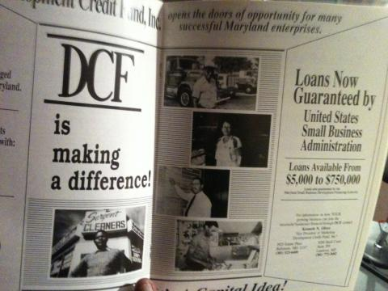
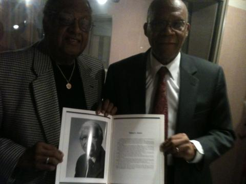

After a couple months looking at the relationship between housing, wealth, and inequality, "The Lines Between Us" is turning its attention to equality of economic opportunity.
First, small businesses. Through much of the 20th century, established banks in Baltimore lent very little start-up capital to people of color who wanted to start businesses. In Baltimore, part of that gap was filled by a black man named William Lloyd Adams, known as “Little Willie.” After making a lot of money running illegal lotteries in 1940s Baltimore, he turned to more legitimate enterprises and essentially became a bank for aspiring business people who lacked access to credit.
When Adams died last year at age 97, former Baltimore Mayor Thomas D’Alessandro III told the Baltimore Sun, “Little Willie brought black entrepreneurs into the formerly all-white business community.”
We want to talk about "Little Willie" Adams today, as well as efforts to expand credit to minority business people throughout the last part of the 20th Century. Joining us is University of Maryland law professor Larry Gibson—his voice may sound familiar…he’s been on WYPR recently talking about his new book Young Thurgood: The Making of a Supreme Court Justice. But he’s also played a part in the "Little Willie" Adams story.
Also with us is Ackneil Muldrow II, chair of the Governor’s Commission on Small Business. He also ran the Development Credit Fund, Inc., which expanded lending to small minority businesses here in the 80s, 90s, and 2000s.
After the break, as part of the Lines Between Us and WYPR Maryland Film Festival Spotlight, we hear from former Baltimore mayor Kurt Schmoke. In 1988, he proposed a strategy of drug decriminalization to cut down on crime in the city. Tom Hall talks with him about what elements of that strategy could be put in place nearly a quarter-century later.
